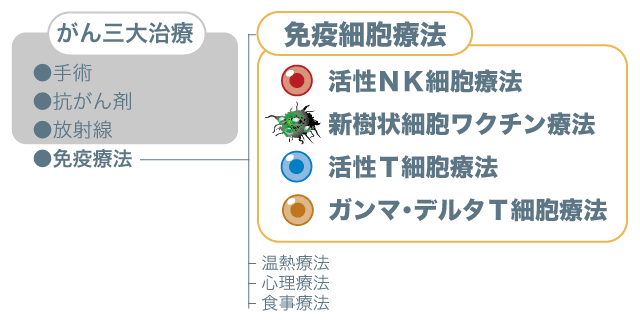
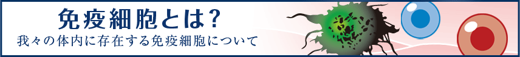
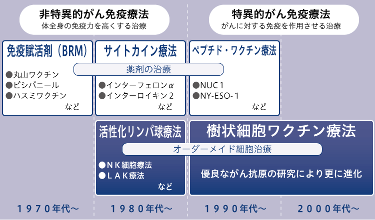
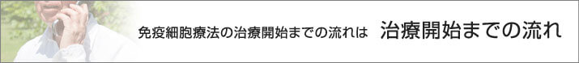
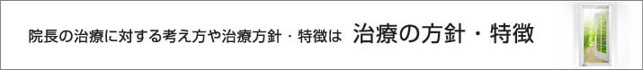

简体中文
简体中文


当院の免疫療法は、生まれ持った能力でがん細胞などを攻撃出来るナチュラル・キラー細胞（NK細胞）を使用した活性NK細胞療法と、自ら得たがん細胞の情報をT細胞へ伝達する樹状細胞を使用した新樹状細胞ワクチン療法、樹状細胞から与えられたがん細胞の情報を頼りにがん細胞を探し攻撃するT細胞を使用した活性T細胞療法、NK細胞と似たような性質を持ちつつも多彩な攻撃手段を持つガンマ・デルタT細胞を使用したガンマ・デルタT細胞療法の4つの免疫療法を行っています。
これらはすべて、患者さんから頂いた血液を用いて行う療法で、基本的には副作用の少ない治療です。
患者さんの血液などの自分自身の組織を用いた医療は再生医療と呼ばれ、iPS細胞を用いた治療も再生医療に該当します。
再生医療は、これまで治療困難とされていた病気などに対して適応ができるなど期待が高まる一方で、その安全性の確保などが課題となっています。
そこで、これらの再生医療を取り扱う医療機関などに対して再生医療等安全性確保法を制定し、2014年11月25日に施行されました。
当院においても、この再生医療の取り組みに対し、下記の様に届出等を行っております。
細胞培養加工施設の届出
医療法人社団 聖友会 免疫細胞研究センター
認定再生医療等委員会の名称
医療法人社団 聖友会 名古屋メディカルクリニック 認定再生医療等委員会
再生医療等の名称
活性ＮＫ細胞療法
新樹状細胞ワクチン療法
活性Ｔ細胞療法
ガンマ・デルタＴ細胞療法
これらの情報はこちらからでも確認できます。
免疫療法
免疫療法とは手術や抗がん剤、放射線治療に次ぐ第四のがん治療です。
私達の体内では毎日約5000個前後のがん細胞が発生していると云われています。その原因となるのが食生活や生活習慣の乱れ、ストレスなどがあげられます。
毎日発生してるがん細胞から我々の体を守っているのが免疫細胞です。
免疫細胞は体内にウイルスが侵入したりがん細胞が発生すると、その細胞を取り込んで分解したり、がん細胞を直接破壊したり、アポトーシスと言う細胞自滅プログラムへと導いて我々の体を健康な状態で保っています。
免疫細胞と呼ばれる細胞は血液中などに存在しており、顆粒球、マクロファージ、樹状細胞、リンパ球などがあげられます。
この中でも、樹状細胞やリンパ球が当院で行う免疫細胞療法の主役となります。
当院の免疫療法では自分自身の細胞を増殖・活性化させて行う薬剤の入らない治療である為、以前のがん治療（三大治療）に比べ副作用が少ない治療だということが言えます。
免疫療法にはいくつもの種類が存在しています。
身体を温めて免疫力を上げる温熱療法、食生活を改善させたり免疫力向上につながる食品を取り入れる食事療法。
サプリメントやキノコ・蜂蜜などを用いた健康食品、ツボの刺激・気功・アロマテラピー・マッサージなどの東洋医学的な方法。

「笑い」を取り入れたり、良くなっているイメージを意識の中に取り込む心理的な方法など、免疫療法のかたちは様々です。
当院の様に免疫細胞を用いて免疫力を上げる治療も免疫療法の一つです。
近年では、免疫チェックポイント阻害薬と呼ばれる薬剤を用いて免疫抑制というブレーキを外す治療もありますが、これも免疫療法と呼ばれています。
これらの治療では、元々身体に備わっている免疫システムの機能を向上させる事で、がんに打ち勝とうというのが目的です。

免疫療法の歩み
世界で初めて行われたがん免疫療法は、19世紀末に米国の医師Ｗ・Ｂ・コーリーが行った「溶血連鎖球菌の投与」と言われています。コーリーは、あるがん患者が溶血連鎖球菌感染症である丹毒に罹った後、がんが消失したという治験から、溶血連鎖球菌を混入したワクチン（コーリートキシン）を用いて、がん治療を行いました。 治癒は初め相当数程度の効果が認められたものの、なぜがんに効くのかが分からなかったこともあり、研究がそれ以上に発展することはありませんでした。
その後、日本ではさらに免疫細胞療法の研究が進められ、結核菌製剤であるBCGや溶血連鎖球菌製剤であるピシバニール、キノコの抽出物であるクレスチン、レンチナンなどが抗がん剤として使われるようになってきました。いわゆるBRM（Biological Response Modifiers）と呼ばれる医薬品です。日本語では免疫賦活物質とか免疫活性化物質と呼ばれているもので、体の免疫力を上げることで抗腫瘍効果を狙うものです。尚、これらは現在でも抗がん剤として使われています。
1960年以降に、T細胞やT細胞の増殖・活性化因子であるインターロイキン-２（IL-2）が発見され、免疫細胞療法は新たな領域へと進みました。それは養子免疫（免疫細胞療法）とも呼ばれる免疫細胞を用いた治療です。
その最初の治療として、1984年に米国国立衛生研究所（NIH）で、Ｓ・ローゼンバーグによって研究的治療が行われました。この時の方法は血液を採取し、その中から分離したリンパ球を体外で高濃度のIL-2を加えて培養することで活性化させたリンパ球を投与するというものです。この方法はLymphokine Activated Killer（LAK）療法と呼ばれます。この試験ではLAK細胞の投与に合わせて、IL-2も投与されたため、IL-2の作用が強く出過ぎて、集中治療室（ICU）での管理が必要となり、結果的に治療には実用的ではないと判断されてしまいました。米国の医療制度には馴染まなかった免疫細胞療法ですが、日本では受け入れられ、さらに発展することになります。
まず、ローゼンバーグの試験の問題点を改良したLAK療法や抗CD3抗体で活性化を行うCAT（CD3 Activated T Lymphocyte）療法が普及するようになりました。
その後、リンパ球を活性化する培養技術の発展と共にがん免疫細胞療法の主役である「活性NK細胞療法」が開発されました。NK細胞はT細胞やB細胞よりも後の1970年代に発見された細胞です。そのため当初は性質が良く分かっておらず純粋にNK細胞を増やすことは出来ませんでした。
数々の試行錯誤や多大な研究費用、時間が費やされて、ようやく活性NK細胞の活性培養技術が確立したのです。これにより、免疫療法は大きな進歩を遂げ、その地位をしっかりと固めるようになりました。
その後はNKT細胞を用いた治療法や体の外で樹状細胞を大量に作製して投与する樹状細胞療法が開発され、実際に治療されるようになってきました。さらにCTLをがんの目印として使っているがん抗原（ペプチド）を投与するペプチドワクチン療法が臨床試験レベルで行われ、多くのデータが蓄積され、その解析が行われています。


